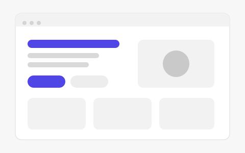
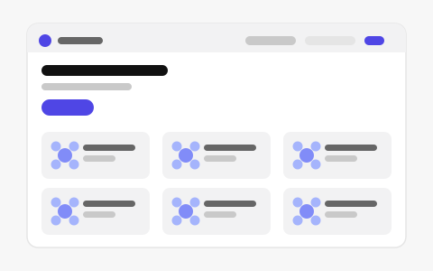
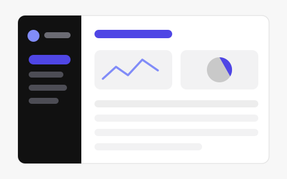

Universitas Muhammadiyah Malang
Program Studi Informatika
Pendidikan tinggi yang sedang saya tempuh dan menjadi tempat utama mempelajari dasar ilmu komputer serta rekayasa perangkat lunak.
Halo, saya
Mahasiswa Informatika · Web Developer
Saya menempuh pendidikan Informatika dan berfokus pada Backend Web Development — membangun logika aplikasi web dengan PHP/Laravel, Node.js/NestJS, dan basis data MySQL.
Tentang
Saya lebih dulu menguasai dasar-dasar web sebelum menyentuh framework, supaya paham apa yang sebenarnya dikerjakan alat bantu tersebut.
Saya Fahmy, mahasiswa Program Studi Informatika di Universitas Muhammadiyah Malang. Saya tertarik pada pengembangan web, terutama sisi backend: bagaimana sebuah aplikasi mengolah, menyimpan, dan menyajikan data.
Ketertarikan itu bermula dari jurusan Rekayasa Perangkat Lunak di SMK PGRI 3 Kota Malang, tempat saya pertama kali belajar menulis program dan memahami alur kerja perangkat lunak.
Saat ini saya mengembangkan keterampilan melalui perkuliahan dan proyek nyata — salah satunya menjadi Backend Developer pada proyek Flowera — sambil memperdalam dasar rekayasa perangkat lunak.
Pendidikan
Riwayat pendidikan yang saya tempuh, dari sekolah menengah kejuruan sampai perguruan tinggi.
Program Studi Informatika
Pendidikan tinggi yang sedang saya tempuh dan menjadi tempat utama mempelajari dasar ilmu komputer serta rekayasa perangkat lunak.
Rekayasa Perangkat Lunak
Jurusan yang menjadi titik awal saya belajar pemrograman dan pengembangan perangkat lunak sebelum melanjutkan ke jenjang sarjana.
Keahlian
Dikelompokkan per bidang. Hanya teknologi yang benar-benar saya pelajari pada perkuliahan atau gunakan pada proyek yang dicantumkan.
Pengalaman
Bagian ini saya isi dengan pengalaman yang benar-benar dijalani, bukan contoh atau kegiatan yang belum terjadi.
Saat ini saya fokus pada perkuliahan dan proyek latihan. Pengalaman akademik, praktikum, organisasi, atau kerja praktik akan ditambahkan di bagian ini setelah benar-benar dijalani, lengkap dengan peran dan deskripsi singkatnya.
Proyek
Tiga proyek berikut adalah proyek nyata: satu tugas mata kuliah, satu proyek tim, dan satu latihan mandiri. Gambar pada kartu berupa ilustrasi tata letak, bukan tangkapan layar.

Website satu halaman untuk tugas Pemrograman Web: struktur HTML5 semantik, CSS variables, Flexbox, CSS Grid, dan media queries, tanpa framework maupun JavaScript untuk fitur utama.

Proyek marketplace florist. Saya menangani sisi backend, yaitu membangun layanan API aplikasi menggunakan NestJS.
Buka flowera.my.id
Latihan membangun antarmuka dashboard berisi navigasi samping, kartu ringkasan, grafik, dan tabel. Fokus latihannya adalah CSS Grid untuk area konten dan Flexbox untuk navigasi.
Kontak
Silakan hubungi saya melalui kanal di bawah ini atau lewat formulir pesan. Halaman ini tanpa backend, jadi pesan tidak dikirim langsung dari website — tombol kirim membuka aplikasi email Anda.